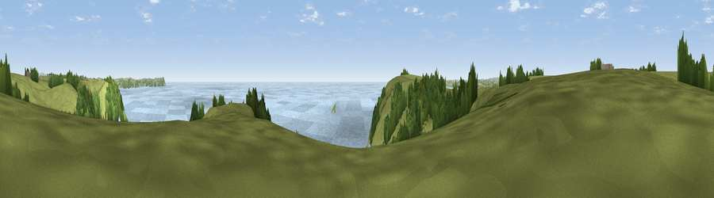

Viewpoint near Veryan
#6085 in England · top 13% of its area beats it · near VeryanThe view, rendered

A 360° render of this exact spot computed from the terrain model, tree cover and land cover — summer colours, afternoon light, calibrated against photographs of famous viewpoints. Real trees, hedges and buildings will differ in detail.
The panorama
Grey silhouette: terrain skyline in each direction (720 bearings, Earth curvature and refraction included). Dashed green: skyline with trees (+15 m) and buildings (+8 m) as obstacles. Blue strip: how far the ground is visible on each bearing.
Where the view opens
Wedge length = distance to the farthest visible ground on that bearing (vegetation-aware). Rings at 10, 25 and 50 km.
What fills the view
46% water · 41% grassland · 13% woodland
Angular shares of the visible panorama (visual magnitude), not map area. Landscape diversity 0.44 (0–1 Shannon).
Key numbers
More beautiful places nearby
The staircase of upgrades: each row has a higher view potential than everything closer. Driving times are estimates from straight-line distance, calibrated against real road routing — check an actual route before setting out.
| Place | Direction | Drive | Score |
|---|---|---|---|
| Viewpoint near Veryan | SSW · 1 km | ~3 min | 70.4 |
| Curgurrell Hill | W · 4 km | ~9 min | 71.5 |
| Viewpoint near Portloe | NE · 5 km | ~11 min | 74.4 |
| Viewpoint near Gorran Haven | ENE · 10 km | ~19 min | 77.0 |
| Viewpoint near Foxhole | NNE · 16 km | ~28 min | 84.3 |
| Viewpoint near Foxhole | NNE · 17 km | ~29 min | 86.4 |
| Viewpoint near Stenalees | NNE · 21 km | ~35 min | 88.0 |
| Viewpoint near Crackington Haven | NNE · 60 km | ~82 min | 88.1 |
50.20803, -4.90904 · source: screening · position refined by local search. Computed location — check access rights before visiting.